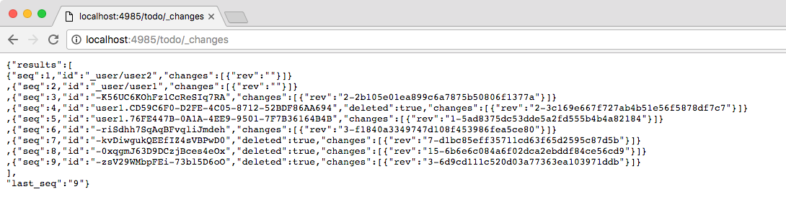

In this lesson you’ll learn how to integrate Couchbase Mobile with external systems using Sync Gateway. You’ll use the changes stream for real-time streaming access to data changes and the bulk APIs for bulk import/export operations.
Requirements
- Xcode 8 (Swift 3)
Getting Started
Download the project below.

Unzip the file and install Couchbase Lite using the install script.
$ cd xcode-project
$ ./install.sh
Open Todo.xcodeproj in Xcode. Then build & run the project.
Requirements
- Visual Studio 2015+ (Windows) or Xamarin Studio 6+ (OS X)
Getting Started
Download the project below.

Requirements
- Android Studio 2.2
- Android SDK 24
- Android Build Tools 24.0.3
- JDK 8
- ⚠️ Docker and x86 Android emulators are not compatible (i.e cannot run simultaneously on the same machine). Make sure Docker isn't running in the background when deploying the application to an x86 Android emulator.
Getting Started
Download the project below.
Changes stream
Connecting
The changes stream returns a sorted list of changes made to documents in the database. It's the primary API to get notified of changes as they are processed by Sync Gateway and persisted to Couchbase Server.
Documents written to Sync Gateway are assigned a sequence value at write time. This sequence is used to order the changes feed. You can query the changes feed using a simple HTTP GET request to /{db}/_changes as shown below.
$ curl -H 'Content-Type: application/json' -vX GET 'http://localhost:4985/todo/_changes?since=3'
Note: The curl executable for Windows can be found on this page
The since parameter in the querystring is used to specify which sequence to start from. In this case the response contains changes starting at seq: 3 because the since=3 parameter was sent in the querystring.
Deleting a document creates a new revision with the deleted: true property and no user properties. This is required in order to propagate the deletion to other devices. In the example above the change with sequence 4 (seq: 4) is a deletion.
Try it out
Download Sync Gateway and start it with the configuration file in the root directory of the accompanying project.
~/Downloads/couchbase-sync-gateway/bin/sync_gateway sync-gateway-config.jsonPS> & 'C:\Program Files (x86)\Couchbase\sync_gateway.exe' sync-gateway-config.json
Note: The Sync Gateway service might be running on Windows which will prevent this command from succeeding with the message 'FATAL: Failed to start HTTP server on 127.0.0.1:4985: listen tcp 127.0.0.1:4985: bind: Only one usage of each socket address (protocol/network address/port) is normally permitted.' To get around this, stop the 'Couchbase Sync Gateway' service in 'services.msc'.
Open AppDelegate.swift and set the following constants to
true.let kLoginFlowEnabled = true let kSyncEnabled = trueRun the application, login with the user1/pass credentials and add a new list. It should appear as a new document on the Admin UI of Sync Gateway on http://localhost:4985/_admin/db/todo.
To access the changes stream (also called the changes feed). Open a browser tab at http://localhost:4985/todo/_changes.

Download Sync Gateway and start it with the configuration file in the root directory of the accompanying project.
~/Downloads/couchbase-sync-gateway/bin/sync_gateway sync-gateway-config.jsonPS> & 'C:\Program Files (x86)\Couchbase\sync_gateway.exe' sync-gateway-config.jsonNote: The Sync Gateway service might be running on Windows which will prevent this command from succeeding with the message 'FATAL: Failed to start HTTP server on 127.0.0.1:4985: listen tcp 127.0.0.1:4985: bind: Only one usage of each socket address (protocol/network address/port) is normally permitted.' To get around this, stop the 'Couchbase Sync Gateway' service in 'services.msc'.
Open CoreApp.cs and change the
CreateHint()method as follows:var retVal = new CoreAppStartHint { LoginEnabled = true, // This line needs to be changed EncryptionEnabled = false, SyncEnabled = true, // This line needs to be changed UsePrebuiltDB = false, ConflictResolution = false, Username = "todo" }; return retVal;Run the application, login with the user1/pass credentials and add a new list. It should appear as a new document on the Admin UI of Sync Gateway on http://localhost:4985/_admin/db/todo.
To access the changes stream (also called the changes feed). Open a browser tab at http://localhost:4985/todo/_changes.
Download Sync Gateway and start it with the configuration file in the root directory of the accompanying project.
~/Downloads/couchbase-sync-gateway/bin/sync_gateway sync-gateway-config.jsonOpen Application.java and set the following constants to
true.let mLoginFlowEnabled = true let mSyncEnabled = trueRun the application, login with the user1/pass credentials and add a new list. It should appear as a new document on the Admin UI of Sync Gateway on http://localhost:4985/_admin/db/todo.
To access the changes stream (also called the changes feed). Open a browser tab at http://localhost:4985/todo/_changes.
Subscribing to changes
In this section you will write a script to subscribe to changes continuously. This becomes particularly useful for integrating Couchbase Mobile with other systems.
To be notified of a change as it happens, an HTTP socket must remain open between the client and Sync Gateway. The feed querystring option is used in this case and there are 2 different feed types:
- longpoll: The response will contain all the changes since the specified sequence. If seq is the last sequence number (the most recent one) then the connection will remain open until a new document is processed by Sync Gateway and the change event is sent.
- continuous: In this case, Sync Gateway will hold the connection open forever.
To subscribe to the changes feed you can use any HTTP library to send the GET /_changes request with query options. In this lesson however you will use the generated libraries based on the Swagger specs. The code below sends a request to the changes stream every time a response has been received and processed. The getChanges(seq) method is called recursively passing the last_seq property received in the response as the since value in the subsequent request.
var Swagger = require('swagger-client')
, fs = require('fs')
, spec = require('./spec');
// Use the SwaggerJS module to dynamically load the Swagger spec
new Swagger({
spec: spec,
usePromise: true
})
.then(function (res) {
client = res;
// Start getting changes at seq: 0
getChanges(0);
function getChanges(seq) {
// Use the Swagger client to connect to the changes feed
client.database.get_db_changes({db: 'todo', include_docs: true, since: seq, feed: 'longpoll'})
.then(function (res) {
var results = res.obj.results;
console.log(results.length + ' change(s) received');
processChanges(results);
// Get changes since the last sequence
getChanges(res.obj.last_seq);
})
.catch(function (err) {
console.log(err);
});
}
});
Notice that the get_db_changes method is used with since: <seq> and feed: longpoll to get a set of changes since a specified sequence. The include_docs: true option is used to include the document body in the response.
Try it out
Open a Terminal window in the bot directory, install the dependencies and start the bot.
npm install node app.jsMake further changes in the application and notice that the number of changes are printed to the console.


Bulk operations
In this section you will learn how to persist an image as an attachment using the Admin REST API. You will extend the changes feed handling code from the previous section to attach the image to a task document only if the text value is "apple", "coffee" or "potatoes".
Similarly to the previous section, you will use the API methods available on the library provided by Swagger.
function processChanges(results) {
for (var i = 0; i < results.length; i++) {
var doc = results[i].doc;
var img;
if (doc && !doc._deleted && doc.type == 'task' && !doc._attachments) {
switch (doc.task.toLowerCase()) {
case 'apple':
img = fs.readFileSync('apple.png');
break;
case 'coffee':
img = fs.readFileSync('coffee.png');
break;
case 'potatoes':
img = fs.readFileSync('potatoes.png');
break;
}
if (img) {
var base64 = img.toString('base64');
doc._attachments = {
image: {
content_type: 'image\/png',
data: base64
}
};
client.database.post_db_bulk_docs({db: 'todo', BulkDocsBody: {docs: [doc]}})
.then(function (res) {
console.log('1 change posted');
})
.catch(function (err) {
console.log(err);
});
}
}
}
}
This code checks that the change is not a deletion and that the document type is "task". If the doc.task property is either "apple", "coffee" or "potatoes" then it reads the corresponding image as a Base64 string and sets it on the document's _attachments dictionary. Finally it persists the document with the attachment back to Sync Gateway using the post_db_bulk_docs method.
Try it out
- Run the application and make sure it's replicating to Sync Gateway.
Start the bot.
node app.jsAdd a task called "Apple", "Coffee" or "Potatoes" and an image should appear after a few seconds. That's the attachment that was added to Sync Gateway by the bot and in turn replicated to Couchbase Lite.


Conclusion
Well done! You've completed this lesson on integration by using the Stream API to subscribe to changes and the REST API to persist a document back to Sync Gateway. Feel free to share your feedback, findings or ask any questions on the forums.